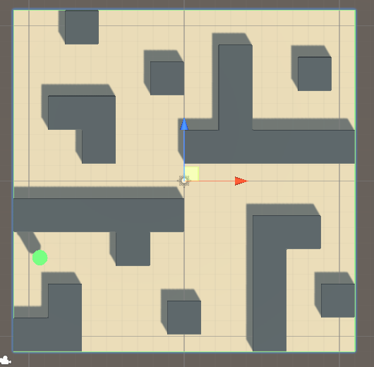
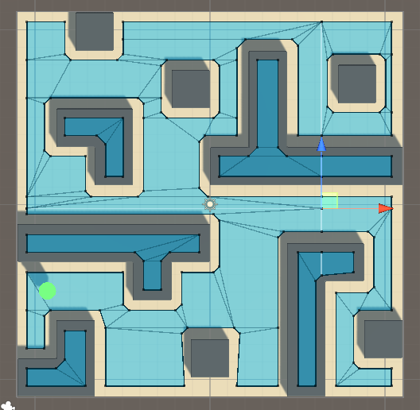
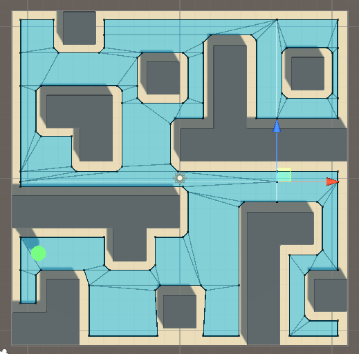

Example01/Materials Folder: Contains Materials to Stylize the Sample Scene
These files can just be inserted into the assests folder
Step 1.2: How to Grab Folders From Github Repository
Unfortunatly, Github doesnt have a built in feature allowing for an individual to download a complete folder at once. To get all the files in a folder on Github
the following process can be done.
Option 1: Dowload Each File
Go through folder and download each file one at a time and recreate file structure in Unity
Fork the repository contaning the wanted files. Fork it under your user or organization
Open Github Desktop and Clone the forked repository to your desktop
Locate the Github folder on your hardrive to find the desired files
Drag the files for the project into your Unity Project
Once the files are in your Unity Project, we can begin working with NavMesh
Step 2: Build NavMesh Field
To start working with NavMesh, you first need to open the example scene that was grabbed from the Github folder. In this scene you can apply materials to the
ground and wall objects to make them stand out more. Once the scene is open it should look like this:

Building the NavMesh Field can be done by completing the following steps
Create an empty GameObject in Heirarchy and rename NavMesh
Add the NavMeshSurface script as a component to the NavMesh object
In the NavMeshSurface component, click bake. This will create a NavMeshSurface based on the rendering of the level

You can see that the NavMeshSurface bake identifies the walls as walkable, we dont want this. To make the walls unwalkable, click on the
Walls object and add the NavMeshModifier script as a component. Toggle the Override Area field in the NavMeshModifier
and then change Area Type to Not Walkable. Now rebake the NavMeshSurface and the walls should become unwalkable!

Now the NavMesh Field is set up and we can move on to making the AI move inside of this field
Step 3: Implement AI on the Player
Follow these setps to implement an AI controller that makes the player move along the NavMesh to wherever you click!
Apply a box collider to the ground object. This will allow for the AgentController Script to work correctly
Add the Nav Mesh Agent component to the Player object
Add the Agent Contoller script to the Player object
Drag the Main Camera object into the Agent Controller Script in the Cam field
Drag the Nav Mesh Agent component on the Player down into the Agent field in the Agent Controller Script
Your NavMesh AI system is now setup! Run the game and click anywhere on the ground block and your Player should find the optimal path to that point and move there!
Further Resources & Full Tutorial Video
This tutorial and the resouces are not my own there are credit of Brackeys youtube channel. Check his channel
out for further tutorials in Unity.